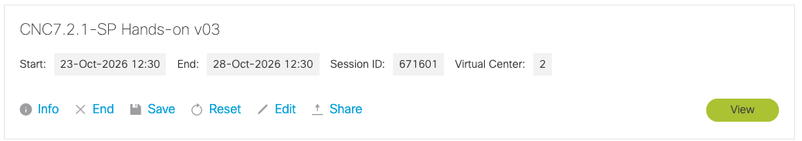
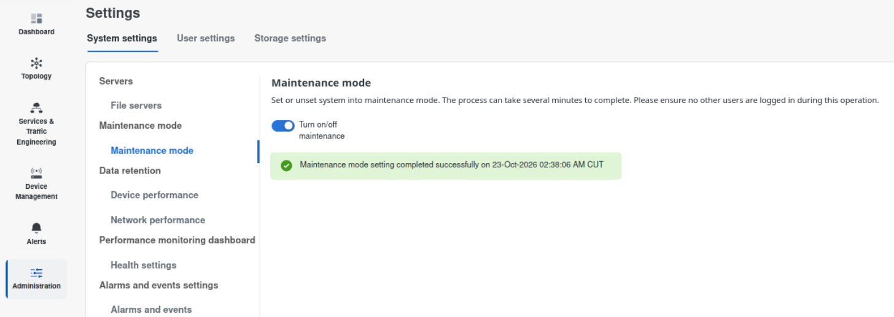
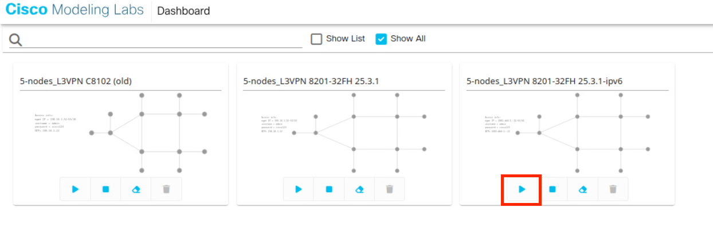
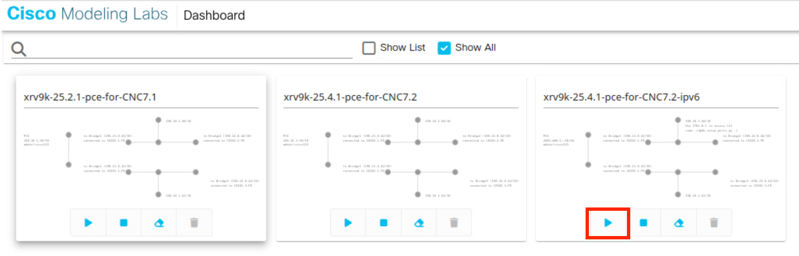

1. Preparation¶
Time: 20 minutes, most of it waiting.
Objective: Leave maintenance mode, start the CML lab, and log in to a controller that is ready for work.
Instructor
Maintenance mode shuts the applications down gracefully, and bringing them back takes several minutes.
1.1 Disable maintenance mode¶
Maintenance mode is how CNC stops itself cleanly for a reboot, a backup, or a restore. After a reboot that began in maintenance mode, the cluster comes back in maintenance mode and waits for the slider to be turned off.
-
Sign in to the dCloud.

-
Access Ubuntu2204-1T-Desktop, run Firefox on the Desktop and open CNC UI (username and password are shared in the session)
https://[2001:db8:134::200]:30603
-
Go to Administration > Settings > System Settings > Maintenance Mode.
- If a popup already offers to turn maintenance mode off, accept it.
-
If the Maintenance slider is On, drag it to Off and confirm.

-
Wait. The applications need several minutes.
Result: The maintenance slider stays Off, the UI loads the normal home page.
1.2 Start the CML lab¶
- Open another tab on Firefox and click "CML2 for XR" in the bookmark.
- Start "5-nodes_L3VPN 8201-32FH 25.3.1-ipv6" scenario

- Open another tab on Firefox and click "CML2 for PCE" in the bookmark.
- Start "xrv9k-25.4.1-pce-for-CNC7.2-ipv6" scenario

Result: The lab is booted. CNC can reach the devices after the providers and the Data Gateway are healthy. You confirm that reachability in the next chapter.
Result: You are in the UI as yourself, and the controller is in normal operating mode.
Done when¶
- Maintenance mode is Off.
- Log in to CNC
- The CML labs are booted.